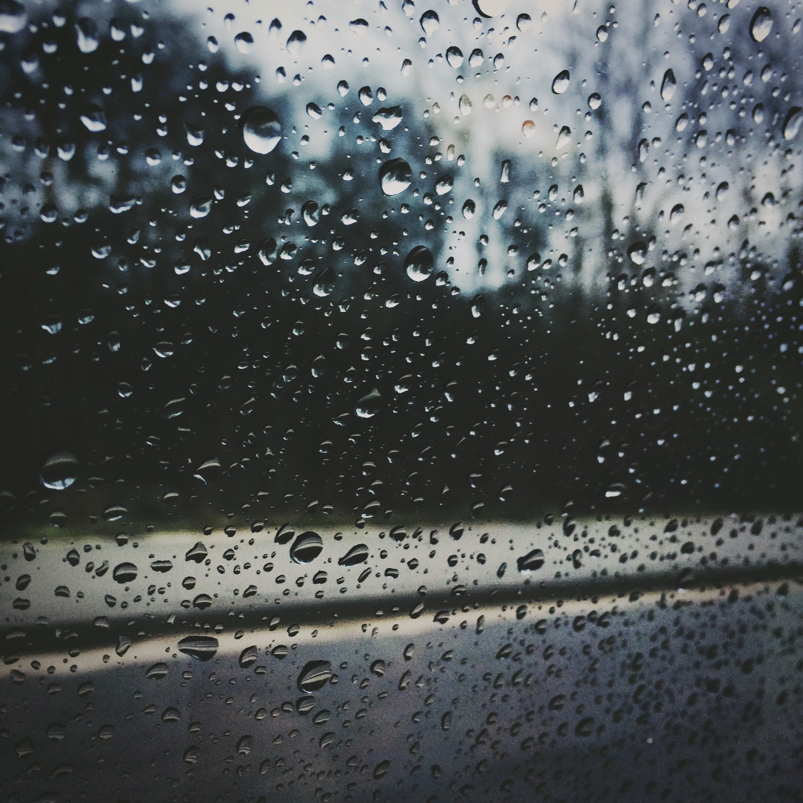
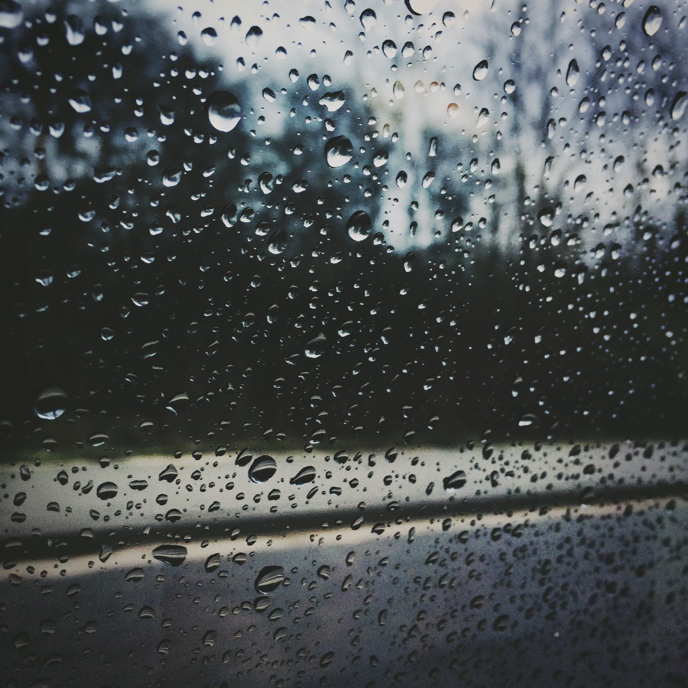
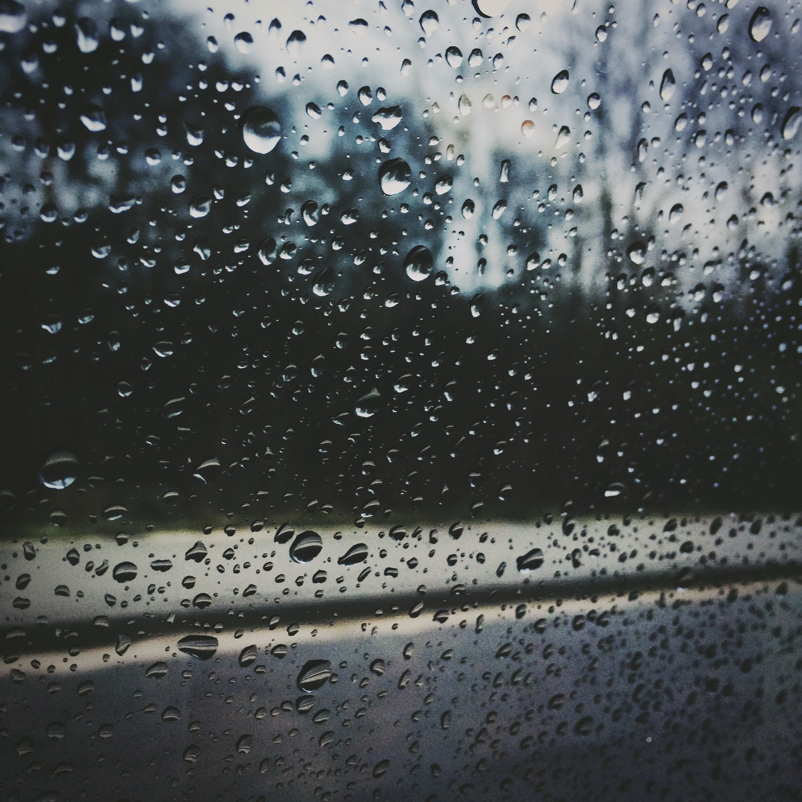

Galeria


 

Witaj! Firma TokaTech zajmuje się profesjonalnym piaskowaniem oraz renowacją metalu, drewna i innych powierzchni. Działamy lokalnie i stawiamy na jakość usług oraz zadowolenie klientów.

TokaTech – Piaskowanie i Renowacja
üìç ul. Przyk≈Çadowa 123, 00-000 Miasto
üìû +48 123 456 789
✉️ kontakt@tokatech.pl
üïí Godziny otwarcia:
Pon–Pt: 8:00–17:00
Sobota: 9:00–13:00
Niedziela: nieczynne